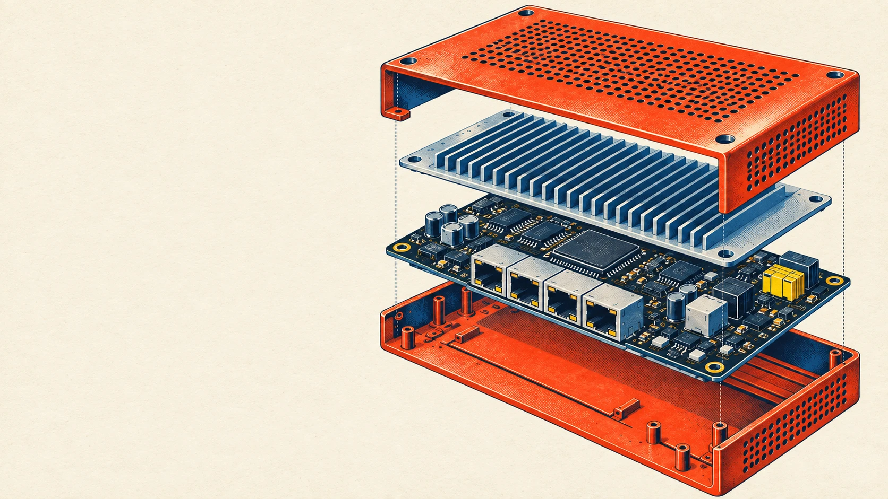

IT consulting
and AI
automation.
I’m Shawn. I help people and small businesses in the GTA set up, fix and get more from their technology.
Talk to Shawn
IT support
Get a new computer set up or help with technology that isn’t working properly.
02
Networks & WiFi
Improve WiFi coverage, connect your equipment and plan security cameras for your space.
03
AI automation
Handle incoming calls, organise enquiries and automate routine follow-up.
Follow an enquiry.
Choose a sample request and see how its details move through a workflow.
Discuss your projectSample workflow
Incoming enquiry
“Could I book a consultation about our office WiFi?”
Enquiry received1 / 3
Start with the details.
The request is collected so the business can understand what help is needed.
Service requestedOffice WiFi consultation
Simulated workflow. No enquiry is sent or appointment booked.

What can I
help you with?
A few details about your setup and what you need help with are enough to start.
Request a consultation ↗info@hydetech.ca